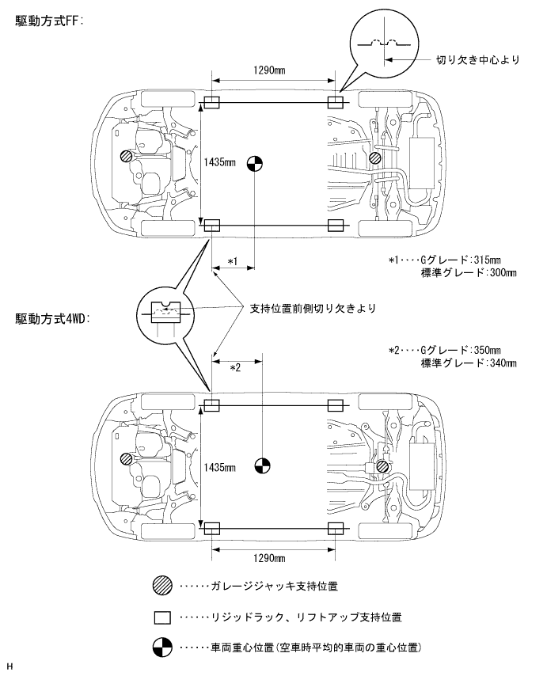
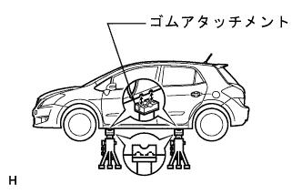
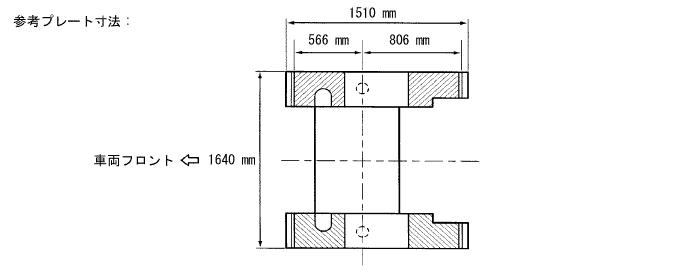
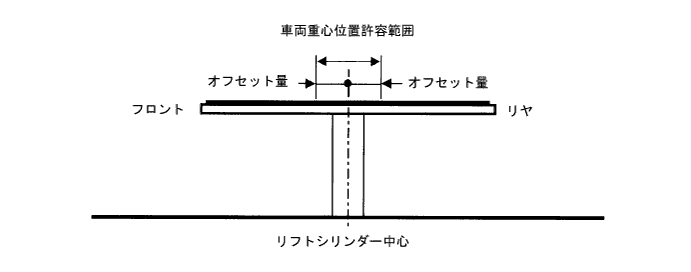
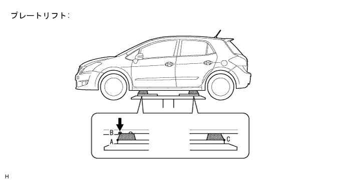
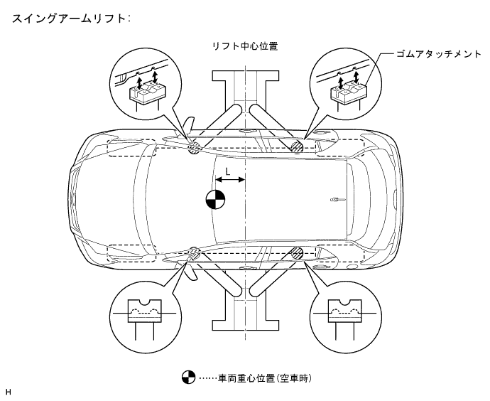

General Precautions Jack, Rigid Rack and Lift Support Positions |
As a rule, the vehicle should be nearly unladen; never jack up or lift up the vehicle with heavy objects loaded.
When heavy components such as the engine or transmission are removed, the center of gravity of the vehicle shifts. Therefore, either load balance weights so that they cannot roll, or support the jack support points with a transmission jack, etc.
Make sure that jacks, rigid racks, support blocks, attachments, etc. securely support the specified positions.
Never jack up or lift up a vehicle that exceeds the capacity of the jack or lift.

Always work on a level surface and use wheel chocks.
 |
Use rigid racks with rubber attachments as shown in the illustration.
Securely support the specified position with the center of the jack saddle.
Securely support the specified positions with the rigid racks.
When jacking up the front wheels, release the parking brake and place chocks only behind the rear wheels. When jacking up the rear wheels, place chocks only in front of the front wheels.
When jacking up only the front or rear wheels, place chocks both in front of and behind the wheels that are on the ground.
When lowering the vehicle from a state in which only the front wheels are jacked up, release the parking brake and place chocks only in front of the rear wheels. When lowering the vehicle from a state in which only the rear wheels are jacked up, place chocks only behind the front wheels.
Follow the lift instruction manual and work safely.

Use plate lift attachments.
When lifting up the vehicle with a plate lift, check that the vehicle's center of gravity is within the allowable center of gravity range of the lift platform.

Always drive the vehicle onto the specified position.
| Vehicle Lateral Set Position | Drive onto the center of the lift. |
| Vehicle Longitudinal Set Position |
|
Lift up the vehicle until the tires are slightly off the ground, rock the vehicle and check that it is stable.


Follow the lift instruction manual and work safely.
Use lift pads with rubber attachments as shown in the illustration.
Drive the vehicle onto the lift so that the center of the lift and the center of gravity of the vehicle are as close as possible (L is short).
Adjust the height of the lift pads so that the vehicle is level and the pads do not contact the rocker molding, and securely align the grooves of the lift pads with the rigid rack support positions.
Always lock the swing arms before working.
Lift up the vehicle until the tires are slightly off the ground, rock the vehicle and check that it is stable.
Follow the lift instruction manual and work safely.
Do not damage the tires and wheels with the free wheel beam.
Secure the vehicle using wheel chocks.